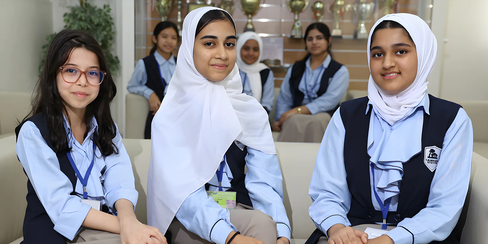
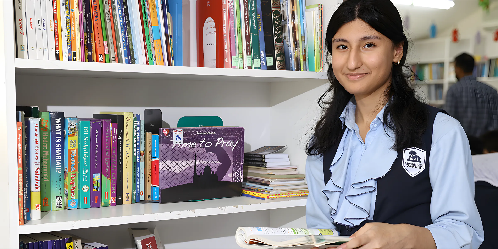
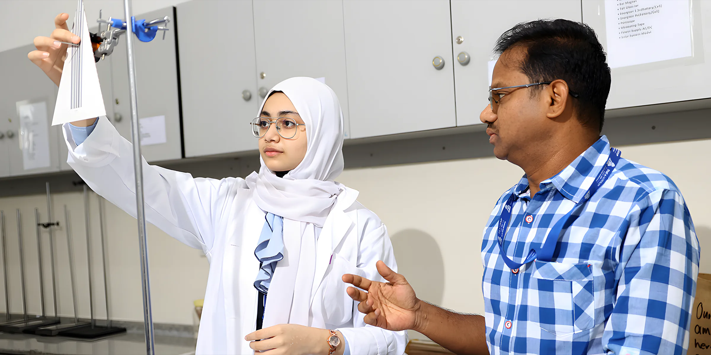
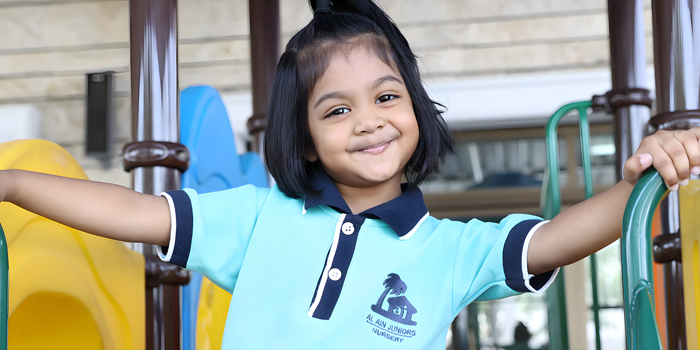
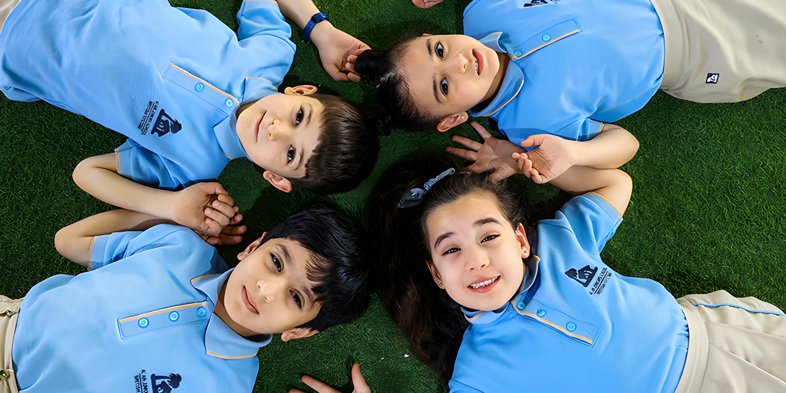

Al Ain JuniorsSchool since 1989
British (Cambridge) and Indian (CBSE) schooling from KG to Grade 12, and our own nursery for children from 2 to 4. One campus in Falaj Hazza, just behind Schools Road.
- ADEK inspection
- Rated Good
- Cambridge
- Accreditation AE187
- CBSE
- Affiliation 6630040
- Students from
- 25+ nationalities

British System studentsFalaj Hazza, Al Ain
Two curricula and a nursery, side by side
The British and Indian systems run in two separate wings of the same campus, each with its own reception, science and computer labs, library and hall. Pick the one that fits your child, then call us or come and see it.
01British SystemCambridge, KG1 to Grade 12. IGCSE, AS and A Level.
- Cambridge accredited (AE187): iGCSE and GCE A Levels, set and marked by Cambridge International, UK
- Teaching built on active learning and problem solving
- FS2 to Year 1: Mon to Thu 7:20am to 1pm, Fri to 10:45am
- Year 2 to Year 13: Mon to Thu 7:15am to 2:15pm, Fri to 10:45am
- Read about the British System

02Indian SystemCBSE, KG to Grade 12, with our own workbooks.
- CBSE affiliated (6630040), first Grade 12 board exams in 2004
- Textbooks plus the school's own workbooks, experiments, project work, exhibitions and field trips
- Grades 1 to 12: Mon to Thu 7:30am to 2:15pm, Fri to 10:40am
- Read about the Indian System

03Al Ain Juniors NurseryBritish EYFS for children aged 2 to 4.
- Where it all started: our nursery opened in 1989
- British Early Years Foundation Stage, flexible to each child
- A bigger building in the heart of Al Ain
- Read about the nursery

Thirty-seven years in Al Ain. Our founder still sits on the board.
Mrs Tanveer Arshad opens a small nursery in Al Ain. Primary, secondary and senior classes followed, one grade a year.
nationalities in our classrooms, on an equal-opportunities model where each child is valued and supported.
is our ADEK inspection rating. In 2024 we also won two ADEK Awards.Best Parental Engagement 2024Standardized Benchmark 2024
This term
From the Principal
Every child is a fountainhead of potential, which we at Al Ain Juniors School recognize and respect.
Mr Mohammad GaffarPrincipal, Al Ain Juniors School

Our youngest pupils, on the school grass
The school day
From 7 September 2026. Friday is a short day for everyone, and the school is closed on Saturday and Sunday.
| Section | Monday to Thursday | Friday |
|---|---|---|
| British SystemFS2 to Year 1 | 7:20am – 1:00pm | 7:20 – 10:45am |
| British SystemYear 2 to Year 13 | 7:15am – 2:15pm | 7:15 – 10:45am |
| Indian SystemGrades 1 to 12 | 7:30am – 2:15pm | 7:30 – 10:40am |
After school, the optional AJ Club runs activities for students who sign up. Ask the front office for this term's list.
Find us
Al Ain Juniors School, Falaj Hazza, Al Ain, Abu Dhabi
Just behind Schools Road, on one of the largest private school campuses in Al Ain. Call ahead and we'll show you round.
Places go early. Start with a call.
We're one of the most asked-for schools in the city and places are limited, so we encourage parents to start the admission process as early as they can. Siblings of current students get priority.